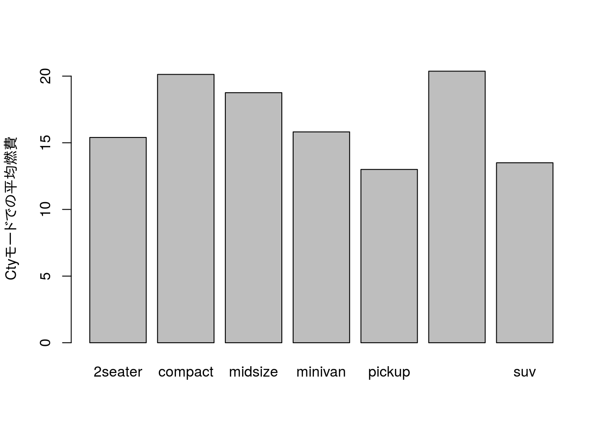
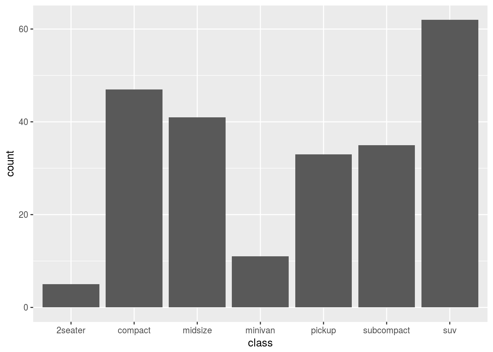
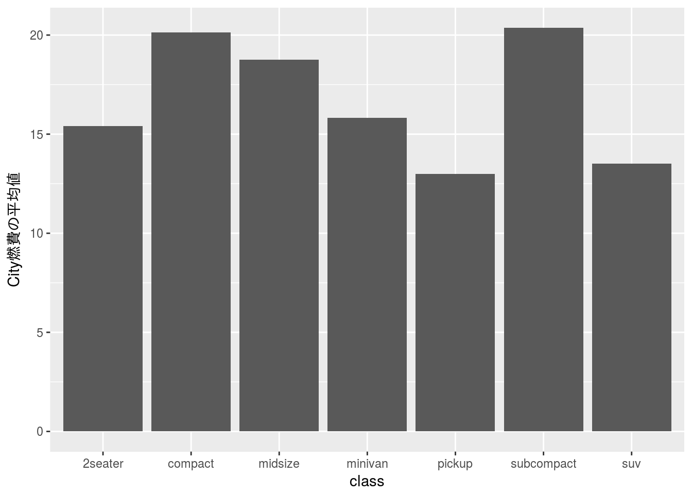
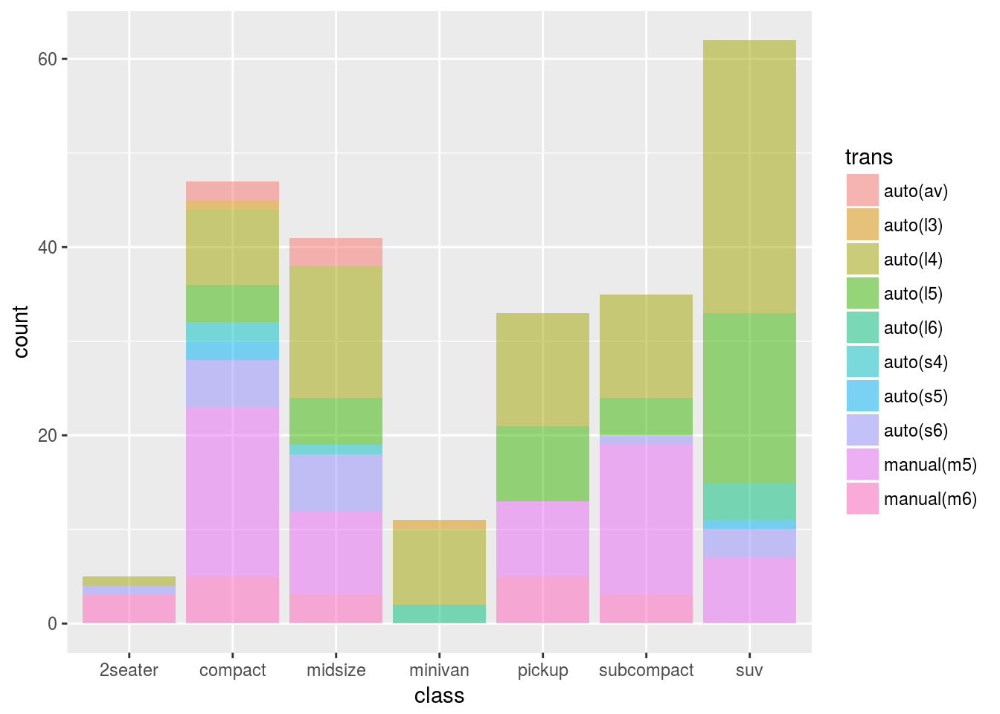
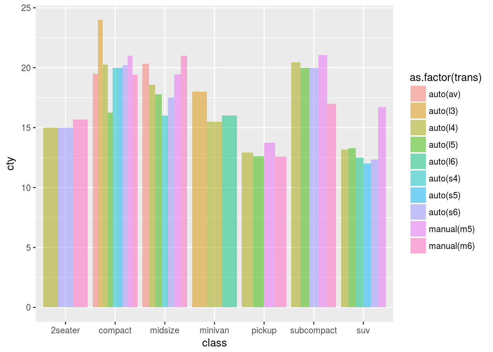
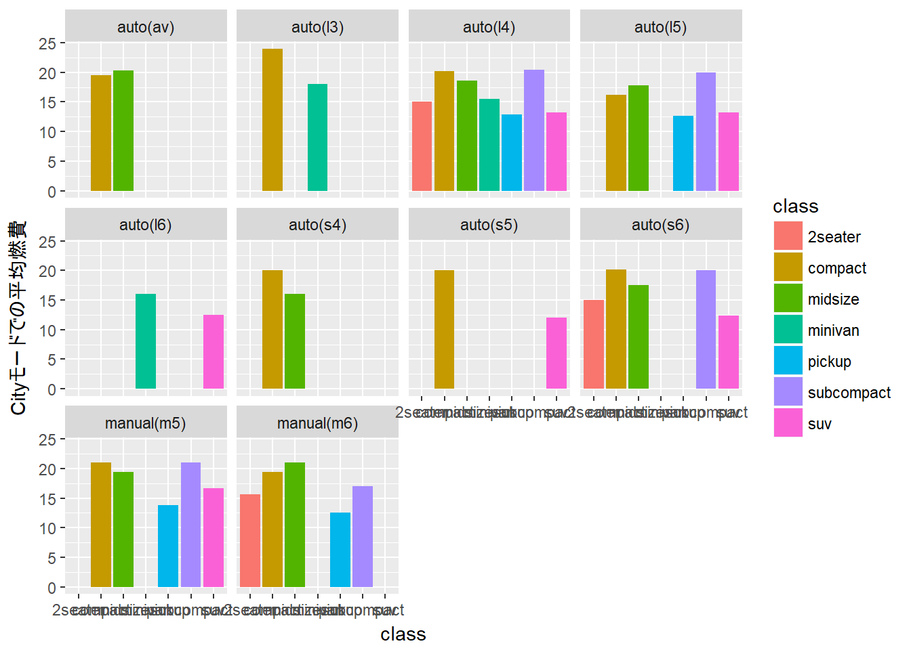
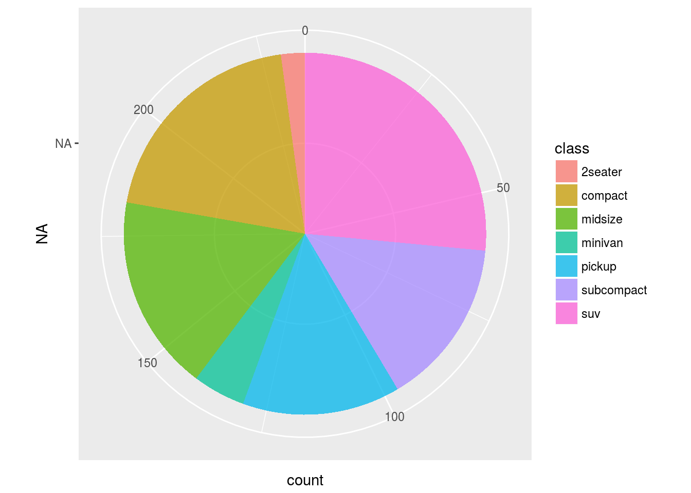
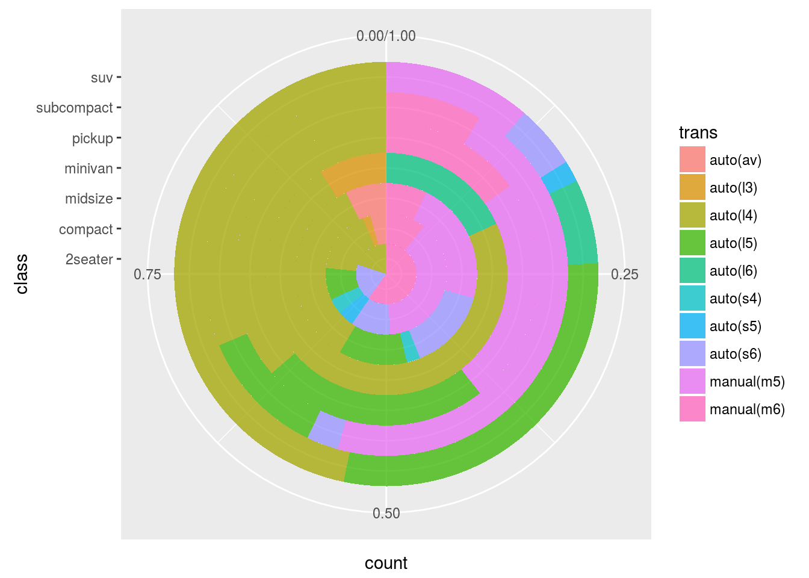

棒グラフ
棒グラフは複数の値を比較するために使われることが多いグラフです。棒の高さ、または、長さで値の大小を比較します。また、横軸に時系列データを取ることで時系列の推移を見るためにも使われる場合があります。なお、ヒストグラムと異なり棒グラフの面積に意味はありません。
なお、本ページではR version 3.4.4 (2018-03-15)の標準パッケージ以外に以下の追加パッケージを用いています。
| Package | Version | Description |
|---|---|---|
| tidyverse | 1.2.1 | Easily Install and Load the ‘Tidyverse’ |
また、本ページでは以下のデータセットを用いています。
| Dataset | Package | Version | Description |
|---|---|---|---|
| mpg | ggplot2 | 2.2.1 | Fuel economy data from 1999 and 2008 for 38 popular models of car |
標準パッケージを用いる方法
標準パッケージを用いて箱ひげ図を描くにはbarplot関数を用います。barplot関数は引数に高さ（height）、すなわち、Y軸の値を取りますのであらかじめY軸の値を計算しておく必要があります。
ggplot2::mpg %>%
dplyr::group_by(class) %>%
dplyr::summarise(cty = mean(cty, na.rm = TRUE)) %>%
with(., barplot(cty, names.arg = class, ylab = "Ctyモードでの平均燃費"))
残念ながらあまり使い勝手のいい関数とは言えません。
追加パッケージを用いる方法
ggplot2パッケージにはggplot2::geom_barという棒グラフを描くための関数が用意されています。ggplot2::geom_bar関数はデフォルトで横軸に因子水準を縦軸に度数を取ります。縦軸に統計量などを取りたい場合にはオプション指定が必要です。
基本的な棒グラフ
前述のようにggplot2::geom_bar関数は縦軸に度数を取ります。例えばggplot2::mpgデータセットのclassデータを指定すると以下のように度数がグラフ化されていることが分かります。
ggplot2::mpg %>%
ggplot2::ggplot(ggplot2::aes(x = class)) +
ggplot2::geom_bar()
ggplot2::mpg %>%
dplyr::count(class) %>%
tidyr::spread(key = class, value = n)
統計量で描く
（要約）統計量を棒グラフで比較する場合にはggplot2::geom_bar関数のstatオプションに"identitiy"を指定します。
ggplot2::mpg %>%
dplyr::group_by(class) %>%
dplyr::summarise(mean = mean(cty)) %>%
ggplot2::ggplot(ggplot2::aes(x = class, y = mean)) +
ggplot2::geom_bar(stat = "identity") +
ggplot2::labs(y = "Cityモードでの平均燃費")ggplot2::mpg %>%
dplyr::group_by(class) %>%
dplyr::summarise(mean = mean(cty, na.rm = TRUE)) %>%
dplyr::mutate(mean = round(mean, 1)) %>%
tidyr::spread(key = class, value = mean)
層別に描く
ggplot2::geom_bar関数を用いて層別棒グラフを描く場合には縦軸に何を指定しているかをで描き方が異なりますので注意してください。
度数の場合
縦軸が度数の場合は他のggplot2::geom_系関数と同様にfillオプションを指定することで積上げ棒グラフを描くことができます。
ggplot2::mpg %>%
ggplot2::ggplot(ggplot2::aes(x = class, fill = trans)) +
ggplot2::geom_bar(alpha = 0.75)
ggplot2::mpg %>%
dplyr::count(class, trans) %>%
tidyr::spread(key = class, value = n)
これを比率で描きたい場合はggplot2::geom_bar関数でposition = "fill"を指定してください。
ggplot2::mpg %>%
ggplot2::ggplot(ggplot2::aes(x = class, fill = trans)) +
ggplot2::geom_bar(position = "fill", alpha = 0.75)
統計量の場合
縦軸が統計量の場合は積上げ棒グラフを描く意味はありませんので集合棒グラフとして描きます。集合棒グラフを描くにはposition = "dodge"オプションを指定してください。
ggplot2::mpg %>%
ggplot2::ggplot(ggplot2::aes(x = class, y = cty, fill = trans)) +
ggplot2::stat_summary(geom = "bar", fun.y = "mean", position = "dodge",
na.rm = TRUE, alpha = 0.75) +
ggplot2::labs(y = "Cityモードでの平均燃費")
ggplot2::mpg %>%
dplyr::group_by(class, trans) %>%
dplyr::summarise(mean = mean(cty, na.rm = TRUE)) %>%
dplyr::mutate(mean = round(mean, 1)) %>%
tidyr::spread(key = class, value = mean)
集合棒グラフが見難い場合にはggplot2::facet_関数群を利用してください。
ggplot2::mpg %>%
dplyr::group_by(class, trans) %>%
dplyr::summarise(mean = mean(cty)) %>%
ggplot2::ggplot(ggplot2::aes(x = class, y = mean, fill = class)) +
ggplot2::geom_bar(stat = "identity") +
ggplot2::labs(y = "Cityモードでの平均燃費") +
ggplot2::facet_wrap(~ trans)
円グラフ
ggplot2パッケージにおける円グラフは棒グラフのY軸を円周方向に変換したものです。軸変換にはggplot2::coord_polar関数を用います。
ggplot2::mpg %>%
ggplot2::ggplot(ggplot2::aes(x = "", fill = class)) +
ggplot2::geom_bar(width = 1, alpha = 0.75) +
ggplot2::coord_polar(theta = "y")
ggplot2::mpg %>%
dplyr::count(class) %>%
tidyr::spread(key = class, value = n)
なので、層別円グラフを描く場合でも層別棒グラフを軸変換するだけです。
ggplot2::mpg %>%
ggplot2::ggplot(ggplot2::aes(x = class, fill = trans)) +
ggplot2::geom_bar(width = 1, alpha = 0.75) +
ggplot2::coord_polar(theta = "y")
ggplot2::mpg %>%
ggplot2::ggplot(ggplot2::aes(x = class, fill = trans)) +
ggplot2::geom_bar(position = "fill", width = 1, alpha = 0.75) +
ggplot2::coord_polar(theta = "y")
ggplot2::mpg %>%
dplyr::count(class, trans) %>%
tidyr::spread(key = class, value = n) CC BY-NC-SA 4.0 , Sampo Suzuki [2018-07-03 18:54(JST)]
CC BY-NC-SA 4.0 , Sampo Suzuki [2018-07-03 18:54(JST)]